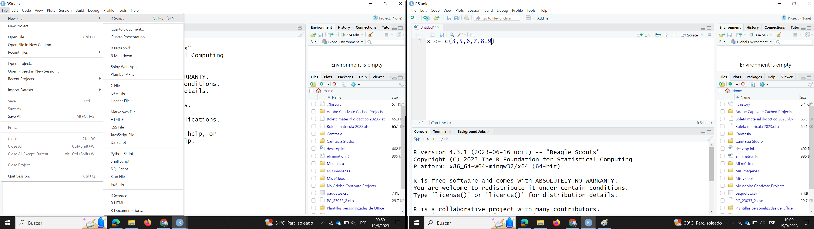
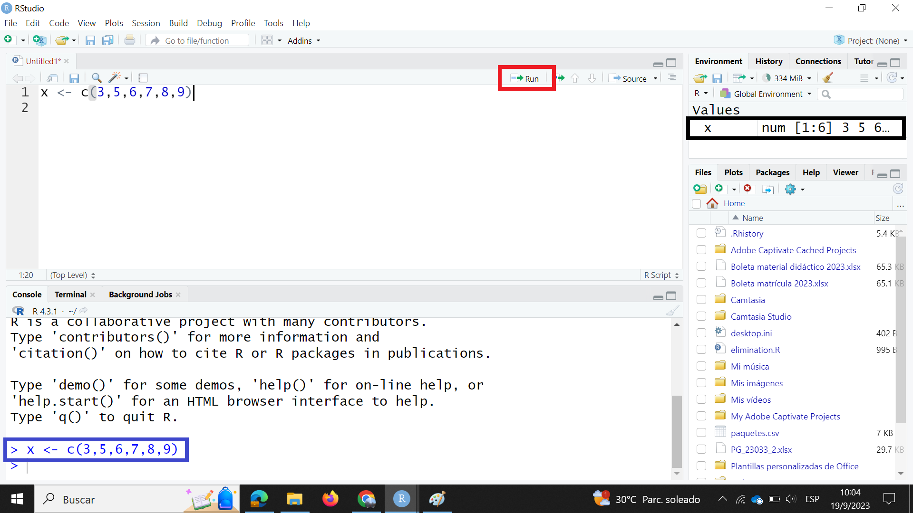

| Categoría | Frecuencia | Porcentaje |
|---|---|---|
| Variedad 1 | 20 | 40 |
| Variedad 2 | 14 | 28 |
| Variedad 3 | 16 | 32 |
3 Estadística Descriptiva
3.1 Tablas y gráficos para resumir datos
Un primer paso en el análisis de datos es resumir los datos. En esta sección exploraremos dos formas de resumir la información usando tablas o gráficos.
Las tablas y los gráficos se escogen de acuerdo al tipo de variable que está siendo analizada. Empezaremos por revisar las tablas para variables cualitativas y cuantitativas.
3.1.1 Tablas para variables cualitativas
Una tabla o tabla de frecuencias para variables cualitativas o categóricas generalmente tiene 3 columnas:
- Categoría: muestra el nombre de cada categoría. Vamos a suponer que en el conjunto de datos para nuestra variable de interés existen \(k\) categorías.
- Frecuencia: (\(f_i\)) la frecuencia o frecuencia absoluta corresponde al número de observaciones correspondientes a la categoría, la suma de todas las frecuencias absolutas debe ser igual al número de observaciones \(n\). \(\sum_{i=1}^{k} f_i=n\)
Importante
El símbolo \(\sum\) se utiliza para representar la sumatoria de un conjunto de elementos. En este caso \(\sum_{i=1}^{k} f_i\) se lee sumatoría desde \(i\) igual a \(1\) hasta \(k\) de \(f_i\).
- Porcentaje: el porcentaje se lo obtiene multiplicando la frecuencia relativa \(h_i\) por \(100\). La frecuencia relativa es igual a la frecuencia absoluta \(f_i\) dividida por el número \(n\) de observaciones. La frecuencia relativa también recibe el nombre de proporción. \(h_i = \dfrac{f_i}{n}\)
Supongamos que en un estudio se utilizaron 50 semillas de 3 variedades de tomate. En la Tabla 3.1 se muestra un resumen del número de semillas usadas de cada variedad, esta tabla es un ejemplo de una tabla para variables cualitativas. De la tabla se deduce que la menor proporción de semillas utilizadas corresponde a la variedad 2, mientras que la mayor proporción de semillas corresponde a la variedad 1.
3.1.2 Tablas para variables cuantitativas
Una tabla de frecuencias para variables cuantitativas tiene 6 columnas:
- Clase: una clase es un intervalo semi abierto o semicerrado con la forma \[\left[ \text{Límite Inferior}, \text{Límite Superior} \right)\]
- Marca de Clase \(X_i\): es un valor igual al promedio de los dos límites de la clase. \[X_i = \dfrac{\text{Límite Superior} + \text{Límite inferior}}{2} \tag{3.1}\]
- Frecuencia \(f_i\): la frecuencia es igual al número de observaciones de la variable que están dentro del intervalo o clase. También se la conoce como frecuencia absoluta.
- Frecuencia relativa \(h_i\): la frecuencia relativa se la calcula como la frecuencia dividida para el total de valores de la variable. \[h_i = \frac{f_i}{n} \tag{3.2}\]
- Frecuencia acumulada \(F_i\): se la calcula sumando las frecuencias desde la primera clase hasta la clase en consideración. \[F_i = \sum_{j=1}^{i}f_j \tag{3.3}\]
- Frecuencia Relativa acumulada \(H_i\): se la calcula sumando las frecuencias relativas desde la primera clase hasta la clase en consideración. \[F_i = \sum_{j=1}^{i}h_j \tag{3.4}\]
Exiten expresiones matemáticas que nos permiten conocer el número de clases necesarias y la amplitud de las clases sin embargo, por el enfoque de este texto en algunas ocasiones dejaremos eso a criterio del investigador o trabajaremos con las clases que por defecto obtengamos de las funciones que aprenderemos a usar de R.
El ingeniero Yorky Gil realizó un experimento con el fin de estimar una curva fenológica para el cultivo de girasol en condiciones del trópico humedo. Recogió datos durante 8 semanas de la altura en centímetros y el número de hojas de las plantas de girasol de determinada variedad. En la Tabla 3.2 se muestra la distribución de frecuencias de la altura para la semana 8. Este es un ejemplo de una tabla de frecuencias para variables cuantitativas. En secciones posteriores discutiremos paso a paso la elaboración de esta tabla.
De la interpretación de esta tabla se obtienen datos importantes. Si nos fijamos en la sexta clase podemos afirmar que en la semana \(8\), \(78\) observaciones es decir el \(32.4\%\) de las plantas tenían una altura entre \(130\) y \(154\) centímetros. De la misma clase podemos decir que \(196\) plantas o el \(81.3 \%\) tienen una altura menor a \(154\) centímetros. En la última clase se observa que la frecuencia absoluta acumulada es de \(241\), este número corresponde al \(100\%\) de las observaciones.
| Clase | Marca de Clase | Frec. | Frec. Rel. | Frec. Acu. | Rel. Acu. |
|---|---|---|---|---|---|
| [10,34) | 22 | 2 | 0.008 | 2 | 0.008 |
| [34,58) | 46 | 6 | 0.025 | 8 | 0.033 |
| [58,82) | 70 | 21 | 0.087 | 29 | 0.120 |
| [82,106) | 94 | 39 | 0.162 | 68 | 0.282 |
| [106,130) | 118 | 50 | 0.207 | 118 | 0.490 |
| [130,154) | 142 | 78 | 0.324 | 196 | 0.813 |
| [154,178) | 166 | 29 | 0.120 | 225 | 0.934 |
| [178,202) | 190 | 13 | 0.054 | 238 | 0.988 |
| [202,226) | 214 | 3 | 0.012 | 241 | 1.000 |
3.1.3 Gráficos
3.1.3.1 Diagrama de barras
Un gráfico de barras es la representación visual de una tabla de distribución de frecuencias. En el eje de las \(x\) se colocan los niveles de la variable cualitativa y en el eje de las \(y\) los valores de las frecuencias o de los porcentajes. En la Figura 3.1 se presenta el gráfico de barras para la Tabla 3.1. Mientras que en la Figura 3.2 se muestra la relación entre estos dos objetos. En general cuando se tiene una variable categórica única que se quiere desglosar y cuantificar por cada categoría este es el tipo de gráfico adecuado.


3.1.3.2 Diagrama de barras agrupadas
En un diagrama de barras agrupadas, al igual que en un diagrama de barras, se muestran los conteos para un grupo, pero además se desglosa para una variable cuantitativa adicional. Por ejemplo en la Figura 3.3 se muestran los porcentajes de nitrógeno, fosforo y potasio para cuatro variedades diferentes de maíz.

3.1.3.3 Diagrama de barras apiladas
Una variación muy útil de los diagramas de barras son los diagramas de barras apiladas. A diferencia de los diagramas de barras agrupadas en este caso se apilan las barras una sobre otra. Esto es útil cuando las barras suman un \(100 \%\). En la Figura 3.4 se muestra la relación Humedad, Materia Seca para cuatro variedades de maíz.

3.1.3.4 Histograma
Un histograma es un gráfico que utiliza barras para representar las frecuencias absolutas o las frecuencias relativas de los posibles resultados de una variable cuantitativa y ayuda a entender los valores que se tienen en un conjunto de datos, cuando hablamos de un histograma o histograma de frecuencias nos referimos a las frecuencias absolutas. Con un histograma se puede conocer la forma, el centro y la variabilidad de la distribución. La altura de las barras corresponde a las frecuencias absolutas.
Es importante tener en cuenta que un histograma no debe ser usado para hacer inferencias ya que nos dan una rápida visión de la distribución de los datos y solo sugieren información sobre ciertas características. En la Figura 3.5 se aprecia el histograma de la altura de los girasoles. En la figura Figura 3.6 se esquematiza la relación entre la tabla de frecuencias y el histograma de frecuencias absolutas.


En algunas ocasiones es de interés graficar las frecuencias relativas. El histograma de las frecuencias relativas tiene la misma forma que el histograma de las frecuencias absolutas, pero las alturas ahora corresponden a las frecuencias relativas. En la Figura 3.7 se muestra el histograma de frecuencias relativas para las alturas de los girasoles. Se puede apreciar que este histograma tiene la misma forma que el histograma de la Figura 3.5.


3.1.3.5 Gráficos de densidad
Un gráfico de densidad es una representación de la distribución de una variable numérica. Es una versión suavizada del histograma. Los gráficos de densidad son usados para estudiar la distribución de una variable. Los picos de un gráfico de densidad muestran donde los se concentran los valores en el rango de la variable. Una ventaja que tienen los gráficos de densidad sobre los histogramas es que son mejores para determinar la forma de la distribución de los datos porque no se ven afectados por el número de barras usadas.

3.1.3.6 Diagramas de caja
Un diagrama de caja resume los valores numéricos de una variable categórica, pero no se limitan solamente a la comparación de los valores sino que además ofrece una idea del rango de valores que puede tomar cada categoría dentro de la variable. En la Figura 3.10 se muestra el diagrama de caja para la altura de plantas de caña de azúcar que fueron sometidas a 3 tratamientos diferentes de riego y fertilización, estas mediciones corresponden a los 149 días después de la siembra.
Para la interpretación de un diagrama de caja principalmente hay que fijarse en la línea central de la caja. Este valor corresponde a la mediana, en secciones posteriores desarrollaremos este concepto, por el momento podemos decir que el \(50 \%\) de los valores son menores a esta cantidad. Cuando la distribución de los datos es simétrica, la mediana se ubicará justo en el centro de la caja. Cuando la distribución de los datos es sesgada, la mediana estará posicionada más cerca de la parte superior o inferior de la caja. Los puntos que se ven sobre o bajo la caja son considerados valores atípicos. En secciones subsiguientes se desarrollarán en detalle los conceptos de sesgo, simetría y valores atípicos.

3.1.3.7 Gráficos de líneas
Estos gráficos son útiles para mostrar la tendencia de una variable cuantitativa en el tiempo. En la Figura 3.11 se muestra la evolución de la altura de las plantas de caña separadas por tratamiento.

3.2 Medidas numéricas de resumen
Una medida numérica de resumen es un número único que se calcula a partir de una muestra que transmite una característica específica de toda la muestra. Las medidas numéricas sirven para medir la tendencia central, la dispersión o la posición de los datos.
3.2.1 Medidas de tendencia central
Las medidas de tendencia central indican alrededor de qué valor se centra, agrupa o aglutina la mayoría de datos. Existen algunas medidas de tendencia central. Como se mencionó antes, en todas se combina la información de una muestra en un único número y cada medida tiene ventajas y desventajas en su uso.
3.2.1.1 Media
Definición 3.1 La media o media aritmética es simplemente el promedio de los valores observados. Es decir, para los \(n\) valores de una muestra \(x_1,\,x_2, \ldots,\,x_n\) la media muestral \(\bar{x}\) se define como la suma de todos los valores dividida para el número de valores:
\[ \bar{x}= \dfrac{\sum_{i=1}^nx_i}{n} \tag{3.5}\]
La media poblacional es denotada por la letra griega \(\mu\), en este caso se divide para \(N\) que representa el tamaño poblacional.
\[ \mu = \dfrac{\sum_{i=1}^Nx_i}{N} \tag{3.6}\]
Importante
Propiedades de la media
- Si a todos los valores \(\left\{x_1, x_2, \ldots,x_n \right\}\) de una variable \(x\) con media \(\bar{x}\) se les suma una constante \(k\), la nueva media es \(\bar{x}+k\)
- Si todos los valores \(\left\{x_1, x_2, \ldots,x_n \right\}\) de una variable \(x\) con media \(\bar{x}\) se los multiplica por una constante \(k\), la nueva media es \(\bar{x}k\)
- Si todos los valores \(\left\{x_1, x_2, \ldots,x_n \right\}\) de una variable \(x\) con media \(\bar{x}\) se los divide por una constante \(k\) diferente de \(0\), la nueva media es \(\dfrac{\bar{x}}{k}\)
Tip
Ventajas de la media
- Es fácil de entender y calcular.
- Depende de todos los valores.
- Es susceptible de cálculos aritméticos posteriores.
- No se ve afectada por las fluctuaciones producto del muestreo
Desventajas de la media
- Es susceptible a valores extremos.
- Al depender de todos los valores de un conjunto de datos, si existe uno o varios valores perdidos no es posible calcularla.
- No se usa para variables cualitativas.
3.2.1.2 Media geométrica
Definición 3.2 La media geométrica \(MG\) de un conjunto de \(n\) observaciones \(\left\{x_1, x_2, \ldots,x_n \right\}\) se define como la raíz enésima del producto de todas las observaciones. Entonces la media geométrica \(MG\) viene dada por:
\[ MG = \sqrt[n]{x_1 \, x_2\, \ldots \,x_n} = \sqrt[n]{\Pi_{i=1}^{n} x_i} \tag{3.7}\]
Importante
Propiedades de la media geométrica
- La media geométrica es menor que la media aritmética.
- El producto de los valores de un conjunto de datos se mantiene si cada término es reemplazado por la media geométrica. \[x_1 \times x_2 \times \ldots \times x_n = \overbrace{GM_x \times \cdots \times GM_x}^{n\,veces} \tag{3.8}\]
- La media geométrica del cociente de las observaciones correspondientes en dos series es igual a los cocientes de sus medias geométricas.
- La media geométrica del producto de las observaciones correspondientes en dos series es igual a los productos de sus medias geométricas.
Tip
¿Cuándo usar la media aritmética o la media geométrica? La media \(\bar{x}\) es usada en la mayoría de las situaciones, sin embargo, la media geométrica \(GM\) es preferida cuando los cambios en los valores de una distribución ocurren de forma multiplicativa. Es decir que se la puede usar para promediar datos que siguen progresiones geométricas, por ejemplo razones, interés compuesto, tasas de depreciación, crecimientos de bacterias en microbiología. La media geométrica es muy útil para construir índices
Los valores atípicos son valores que están muy lejos del resto de los datos. Cuando un conjunto de datos tiene valores atípicos la media podría no ser la mejor medida de tendencia central para describirlo. Los valores atípicos tienen mucha influencia sobre la media y tienden a arrastrar la media en dirección hacia ellos.
3.2.1.3 Mediana
Definición 3.3 La mediana muestral denotada con \(\tilde{x}\) de \(n\) observaciones \(x_1,\,x_2,\,\ldots,x_n\) es el valor central cuando las observaciones están ordenadas en forma ascendente. Cuando el número de observaciones es impar, la mediana es el único valor que está en la mitad de los datos. Mientras que cuando el número de observaciones es par, la mediana es el promedio de los dos valores centrales. En términos matemáticos, supongamos que \(\left\{X\right\}\) denota al conjunto de datos \(X\) ordenado de forma ascendente y \({X}_i\) representa el i-ésimo elemento del conjunto ordenado. La mediana \(\tilde{x}\) es:
\[ \tilde{x} = \begin{cases} \left \{ X \right\}_{\frac{n+1}{2}} & ; n \quad \textrm{impar} \\ \dfrac{\left \{ X \right \}_{\frac{n}{2}} + \left \{ X \right \}_{\frac{n}{2}+1} }{2} & ; n \quad \textrm{par} \end{cases} \tag{3.9}\]
Tip
Ventajas de usar la mediana
- Es fácil de calcular y comprender
- Solo existe una mediana para un conjunto de datos.
- No se ve afectada por valores extremos
- Se puede determinar para escalas ordinales, nominales, de razón e intervalo
Desventajas de usar la mediana
- No toma en cuenta el valor exacto de cada dato y por tanto no usa toda la información disponible.
- Si se agrupan los valores de dos grupos, la mediana de cada grupo no puede ser expresada en términos del grupo agrupado. Dicho de otra forma si se calculan las medianas de subconjuntos de un conjunto de datos, estas medianas no pueden ser combinadas para calcular la mediana de todo el conjunto.
3.2.1.4 Moda
Definición 3.4 La moda denotada por \(Mo\) es el valor que tiene la mayor frecuencia absoluta. Hay conjuntos de datos que no tienen moda, también existen conjuntos de datos con más de una moda. A un conjunto de datos con 2 modas se los llama bimodal, cuando existen más de 2 modas un conjunto recibe el nombre de multimodal.
Tip
Ventajas de usar la moda
- Fácil de determinar.
- Se puede usar para datos con escala nominal u ordinal.
Desventajas de usar la moda
- Debido a que la moda no está definida algebraicamente no se acostumbra a usarla en análisis estadístico.
3.2.2 ¿Cómo escoger la medida de tendencia central adecuada?
En la mayoría de situaciones se prefiere la media como la medida de tendencia central que se reporta, sin embargo, en algunas situaciones se recomienda usar la mediana por ejemplo:
- Hay algunos valores extremos en la distribución.
- Algunas observaciones tienen valores no determinados.
- Los datos se miden en una escala ordinal
Cuando los datos se encuentran en una escala nominal, se prefiere a la moda.
3.2.3 Simetría y sesgo
La forma de una distribución unimodal, puede ser simétrica o sesgada. Una distribución es simétrica si hacia la derecha y la izquierda de un valor central tiene la misma forma como se observa en el histograma de la Figura 3.14, además en esta figura se muestra un diagrama de caja y un gráfico de densidad para una distribución simétrica.
Una distribución es sesgada a la derecha si la cola derecha es más larga que la izquierda, en la Figura 3.12 se muestran el histograma, el diagrama de caja y el gráfico de densidad para una distribución sesgada a la derecha. Finalmente, cuando la cola izquierda es más larga que la derecha la distribución es sesgada a la izquierda en la Figura 3.13 se aprecia una distribución sesgada a la izquierda.
Entre el sesgo y las medidas de tendencia central existen las siguientes relaciones.
- Cuando la distribución es sesgada a la derecha se cumple \(Mo< \tilde{x}< \bar{x}\). En el gráfico de densidad de la Figura 3.12 la línea vertical de color azul representa la moda, la línea vertical de color rojo representa a la mediana y la línea vertical de color naranja representa la media
- Cuando la distribución es sesgada a la izquierda se cumple que \(\bar{x} < \tilde{x} < Mo\). Con los mismos códigos de colores anteriores podemos observar la ubicación de estos valores en la Figura 3.13.
- Cuando la distribución es simétrica se cumple que \(\bar{x} = \tilde{x} = Mo\).


3.2.4 Medidas de dispersión
Supongamos que en una empresa distribuidora de agroquímicos se forman dos equipos de ventas, la empresa ofrece un bono al equipo que tiene el mejor desempeño en las ventas mensuales promedio. En la Tabla 3.3 se muestra el mínimo, la media, la mediana, el máximo y el total para las ventas mensuales de ambos equipos. Se observa que ambos equipos vendieron la misma cantidad total durante el mes por lo que tuvieron la misma media para las ventas mensuales. Es decir, que si se quisiera escoger al mejor equipo por el total de ventas mensuales o por el promedio de ventas mensuales no hay un equipo que haya tenido un mejor desempeño. Por otro lado el equipo 2 tiene un valor mínimo menor que el equipo 1 y en cuanto al máximo el equipo 2 tiene un valor máximo mayor al del equipo 1, esto nos llevaría a pensar que aunque ambos equipos tienen la misma media mensual la distribución de los datos para ambos equipos es diferente.
En la Figura 3.15 se muestra un gráfico de puntos de las ventas por equipo, se ha incluido una línea punteada de color negro en la media de ambos conjuntos (\(20000.00\)), con este gráfico se puede notar que las ventas del equipo 2 están más dispersas que las ventas del equipo 1. El histograma que se muestra en la Figura 3.16 permite visualizar la distribución de las ventas, y finalmente en el diagrama de caja de la Figura 3.17 se aprecia que el equipo 2 tuvo valores atípicos en sus ventas.
| Equipo | Mínimo | Media | Mediana | Máximo | Total |
|---|---|---|---|---|---|
| Team1 | 18174.56 | 20000.00 | 19946.35 | 21620.26 | 400000.00 |
| Team2 | 16947.96 | 20000.00 | 20033.14 | 22918.67 | 400000.00 |


Regresando a nuestra pregunta inicial ¿qué equipo tiene un mayor desempeño en sus ventas mensuales? Para contestar esta pregunta vamos a cuantificar la dispersión de los datos, esta cuantificación la haremos con las tres medidas de dispersión más usadas.
3.2.4.1 Rango
El rango es la medida de dispersión más fácil de calcular, resulta de la diferencia entre el máximo y el mínimo de un conjunto de datos.
\[ Rango = \text{Máximo} - \text{Mínimo} \]
3.2.4.2 Varianza poblacional y muestral
Una forma de definir la dispersión es “la desviación de los datos respecto a la media”. La desviación de una observación respecto a la media se la calcula como la diferencia entre la observación y la media, supongamos un conjunto \(x\) de \(n\) observaciones \(x_1,\, x_2,\, \ldots, x_n\) la desviación i-ésima respecto a la media es igual a \(x_i-\bar{x}\). La media puede ser interpretada como un punto de balance por lo que en un conjunto cualquiera de \(n\) observaciones las desviaciones respecto a la media positivas (\(x_i-\bar{x}>0\)) hacen contrapeso a las desviaciones respecto a la media negativas (\(x_i-\bar{x}<0\)), es decir que \(\sum_{i=1}^n(x_i-\bar{x})=0\). Por esta razón las medidas de dispersión respecto a la media utilizan las desviaciones cuadráticas o el valor absoluto de estas.
Definición 3.5 La varianza poblacional que se denota con \(\sigma^2\) se la calcula como el promedio de las desviaciones cuadráticas respecto a la media:
\[ \sigma^2 = \dfrac{\sum_{i=1}^N(x_i-\mu)^2}{N} \tag{3.10}\]
Definición 3.6 La varianza muestral que se denota con \(s^2\) se la calcula con la expresión: \[ s^2 = \dfrac{\sum_{i=1}^n(x_i-\bar{x})^2}{n-1} \tag{3.11}\]
3.2.4.3 Desviación poblacional y muestral
Definición 3.7 La varianza poblacional o muestral está expresada en unidades cuadráticas, para nuestro ejemplo de las ventas la varianza se expresaría en dólares al cuadrado. Es más fácil interpretar la raíz cuadrada de la varianza. Esta raíz cuadrada se llama desviación estándar. La desviación estándar poblacional se la calcula con:
\[ \sigma = \sqrt{\sigma^2} = \sqrt{\dfrac{\sum_{i=1}^N(x_i-\mu)^2}{N}} \tag{3.12}\]
La desviación estándar muestral se la calcula con:
\[ s = \sqrt{s^2} = \sqrt{\dfrac{\sum_{i=1}^n(x_i-\bar{x})^2}{n-1}} \tag{3.13}\]
3.2.5 Medidas de posición
Las medidas de posición no central permiten conocer otros puntos característicos de la distribución que no son los valores centrales. Entre las medidas de posición no central más importantes están los cuantiles. El término cuantil fue usado por primera vez por Kendall en 1940.
El cuantil de orden \(p\) de una distribución con \(0<p<1\) es el valor \(x_{i}\) de la variable \(X\) que marca un corte de modo que una proporción \(p\) o un porcentaje \(100p\)% de valores de la población es menor o igual que \(x_{i}\) Por ejemplo el cuantil de orden \(0.35\) dejaría un 35% de valores por debajo de él.
3.2.5.1 Tipos de Cuantiles
- Cuartiles: son 3 valores (\(Q_{1}, Q_{2}, Q_{3}\)) que dividen a la distribución en 4 partes iguales.
- Quintiles: son 4 valores (\(K_{1}, K_{2}, K_{3}, K_{4}\)) que dividen a la distribución en 5 partes iguales.
- Deciles: son 9 valores (\(D_1, D_2, D_3, D_4, D_5, D_6, D_7, D_8, D_9\)) que dividen a la distribución en 10 partes iguales.
- Percentiles, son 99 valores (\(P_1, P_2, \ldots P_{99}\)) que dividen a la distribución en 100 partes iguales.

3.2.5.2 Cálculo de cuantiles
Es fácil darse cuenta que existen equivalencias importantes entre los cuantiles, algunos ejemplos de estas equivalencias:
- \(D_5=Q_2=P_{50}\)
- \(D_4=K_2=P_{40}\)
- \(D_3=P_{30}\)
Se deduce entonces que no es necesario tener una expresión para cada tipo de cuantiles, basta con conocer una expresión para calcular percentiles. Para esto debemos conocer dos cosas:
- La posición del percentil en nuestro conjunto de datos.
- El valor del percentil tomando en cuenta su posición.
Para calcular la posición del percentil \(i\) que acumula el 100\(p\)% en un conjunto de datos no agrupado \(X\), de tamaño \(n\) y ordenado en forma ascendente primero determinamos la posición del percentil con la expresión:
\[ \text{Posición} = p(n-1)+1 \tag{3.14}\]
Para determinar el valor \(X_{i.a}\) utilizamos la expresión:
\[ X_{i.a}=X_{i}+0.a(X_{i+1}-X_{i}) \tag{3.15}\]
3.2.5.3 Relación entre los cuartiles y el diagrama de caja.
En la Sección 3.1.3.6 se dijo que la línea central de la caja corresponde a la mediana de los datos, ahora que conocemos a los cuartiles es útil saber cuál es la relación entre los cuartiles y los diagramas de caja. En la Figura 3.19 se muestran las partes del diagrama de cajas. El límite inferior y el límite superior se calculan en función del rango intercuartílico (\(IQR\) por sus siglas en inglés) que es igual a la diferencia entre el tercer y primer cuartil.
\[ IQR = Q_3 - Q_1 \tag{3.16}\]
El límite superior (\(LS\)) y el límite inferior (\(LI\)) se calculan con las siguientes expresiones, respectivamente:
\[ LS = Q_3 + 1.5IQR \tag{3.17}\]
\[ LI = Q_1 - 1.5IQR \tag{3.18}\]

3.3 Primeros pasos en RStudio
En la Sección 1.5, se presentaron algunos conceptos básicos de R utilizando la consola de R. Cuando se trabaja con conjuntos de datos, o cuando se desea guardar y compartir el trabajo realizado es conveniente usar scripts, un script es un archivo de texto que contiene los mismos comandos que ingresaría en la línea de comandos de R.
Una vez abierto RStudio, para crear un script hay dos opciones. La primera es en la barra de herramientas principal escoger File | New File | R Script, la segunda opción es escribir la combinación de teclas (en Windows) Ctrl + Shift + N o Cmd + Shift + N (en Mac).
Cuando el script está creado se puede escribir código como se visualiza a la derecha de la Figura 3.20. Para ejecutar el código se puede ubicar en cualquier parte de la línea y presionar la combinación de teclas Ctrl + Entero Cmd + Enter, otra opción es dar clic en el botón Run ubicado en la parte superior derecha del script (encerrada en rectángulo rojo de la Figura 3.21). Si solo es una línea de código no es necesario seleccionarla para poder ejecutarla. Al momento de ejecutar el código, el código se ejecuta en la consola (rectángulo azul de la Figura 3.21) y además se visualiza el objeto en el ambiente (rectángulo negro de la Figura 3.21).


En el proceso de análisis de datos, adicional a los scripts, la mayoría de ocasiones es necesario tener los datos almacenados en algún directorio de la computadora (en algunas ocasiones los datos se leen desde internet). Las tablas y los gráficos que se generen, también pueden ser almacenados en la computadora. Una forma de manejar esto de forma eficiente es trabajando con directorios de trabajo, un directorio de trabajo es una ruta dentro de la computadora que especifica la ubicación predeterminada de los archivos que leamos en R o que guardemos desde R.
Tip
- Para conocer el directorio de trabajo actual se usa la función
getwd(). - Para fijar el directorio de trabajo se usa la función
setwd(dir = "directorio")
3.3.1 Creación de proyectos en RStudio
RStudio tiene una forma más eficiente de manejar los directorios de trabajo, utilizando proyectos. Un proyecto es simplemente un directorio de trabajo designado con un archivo de extensión .Rproj. Al momento de abrir un proyecto, se configura automáticamente el directorio de trabajo como el directorio donde se encuentra el archivo .Rproj.
Una buena práctica es crear un proyecto en RStudio por cada investigación, tarea o proyecto de análisis que se desee trabajar. Dentro de la carpeta del proyecto es recomendable tener subcarpetas que permitan almacenar los datos que van a ser leídos y producidos como parte de nuestro análisis. Una sugerencia es tener cuatro carpetas como mínimo:
datos: en esta carpeta se encuentran los datos que van a ser analizados.graficos: para guardar los gráficos producidos.resultados: para guardar las tablas resultado del análisis de datos.scripts: en esta carpeta se guardan todos los scripts utilizados en el análisis.
En este texto se utilizará un solo proyecto al que llamaremos r4agro. En cualquier ubicación de nuestra computadora vamos a crear la carpeta llamada r4agro y dentro de esta carpeta las carpetas datos, graficos, resultados y scripts como se muestra en la Figura 3.22.

Para crear un proyecto, se debe dar clic en File -> New Project y aparecerá la ventana mostrada en la Figura 3.23.

Escogemos la opción de acuerdo a nuestras necesidades:
- New Directory: escogemos esta opción si vamos a crear un nuevo directorio desde 0. Cuando se da clic, aparece una nueva ventana como se muestra en la Figura 3.24

Existing Directory: escogemos esta opción si ya tenemos creada la carpeta de nuestro proyecto. En este libro vamos a trabajar siempre escogiendo esta opción. Más adelante explicaremos en detalle como crear un proyecto escogiendo esta opción.
Version Control: El control de versiones ayuda a los equipos de desarrollo de software a controlar y gestionar los cambios en el código fuente a lo largo del tiempo. Los programas y plataformas de control de versiones mantienen un registro de las modificaciones hechas al código. Si se comete un error, los desarrolladores pueden comparar versiones anteriores del código para ayudar a corregir el error al tiempo que se minimizan las molestias para todos los miembros del equipo. RStudio trabaja con dos sistemas de código abierto para el control de versiones: Git y Subversion.
Creación de proyectos (Existing Directory)
File -> New ProjectExisting Directory- Se abre una ventana como la de la Figura 3.25 y damos clic en
Browse. - Se abre una ventana en la que buscamos la ubicación de la carpeta de nuestro proyecto y damos clic en
Open(Figura 3.26). - Posteriormente, escogemos la opción
Create New Project(Figura 3.27). - Finalmente, el proyecto se crea. Identificamos que el proyecto ha sido creado porque ahora aparece el nombre del proyecto en las esquinas superior izquierda y derecha de nuestra ventana de RStudio (Figura 3.28).


3.3.2 Creando visualizaciones con ggplot2.
3.3.2.1 Los datos
En esta sección trabajaremos con el conjunto de datos alt_almacigo.csv, este conjunto de datos corresponde a las alturas de 105 plantas de tomate de 5 variedades, 20 días después de la siembra en los almácigos. Las variables presentes en el archivo son:
- Planta: número de planta estudiada.
- Variedad: variedad de la planta.
- DDS: días después de siembra.
- Altura: altura de la planta en centímetros.
- NHV: Número de hojas verdaderas.
En la Sección 3.3.2.3, explicaremos paso a paso como obtener el gráfico mostrado en la figura Figura 3.29:

3.3.2.2 Cargar paquetes y leer datos
El primer paso es guardar nuestros datos en la carpeta datos de nuestro proyecto, creado anteriormente, r4agro. Posteriormente creamos un script, en esta oportunidad guardaremos nuestro script en la carpeta scripts con el nombre 01_visualizacion.R.
Existen muchas formas de trabajar en un script, sin embargo, se recomienda seguir el siguiente flujo:
Tip
- Cargar los paquetes que sean necesarios para el análisis que se va a trabajar.
- Cargar los datos que se van a utilizar en el análisis.
- Trabajar con los datos, esto incluye realizar gráficos, analizar los datos o crear modelos.
En este primer script trabajaremos solamente con los paquetes dplyr y ggplot2 descritos en la Sección 1.4. En las primeras líneas escribiremos las siguientes líneas de código.
library(dplyr)
library(ggplot2)Una vez cargados los paquetes procedemos a leer los datos. El archivo con el que vamos a trabajar es un archivo de valores separados por comas (comma ¨separated values). Existen muchas funciones que podemos usar para leer este tipo de archivos, sin embargo, vamos a trabajar con la función read.csv. Para no cometer errores al momento de la lectura de los datos es importante identificar si nuestros valores efectivamente están separados por coma (,) y si el archivo utiliza el punto (.) como separador de decimales. El archivo de nuestros datos tiene como separador de los valores el punto y coma, y como separador de decimales la coma.
Importante
- Un archivo
csvno necesariamente, tiene sus valores separados por coma. Dependiendo del sistema operativo o la región geográfica, los valores se guardan separados por coma (,) o por punto y coma (;). - Si los valores están separados por coma, generalmente el separador de decimales es el punto (.).
- Cuando los valores están separados por punto y coma, el separador de decimales es la coma.
Para leer los datos escribimos la siguiente línea de código.
datos <- read.csv("datos/alt_almacigo.csv",sep = ";", dec = ",")
Entendiendo el código

read.csv()Una vez cargados los datos podemos empezar por ver las variables y los tipos de datos en nuestro conjunto leído, para esto podemos usar la función str() o la función glimpse().
Tip
str()permite ver la estructura interna de un objeto. Pertenece al R base.glimpse()se utiliza para ver las columnas del conjunto de datos y mostrar una parte de los datos con respecto a cada atributo que pueda caber en una sola línea.
str(datos)'data.frame': 105 obs. of 5 variables:
$ Planta : int 1 2 3 4 5 6 7 8 9 10 ...
$ Variedad: chr "BN" "BN" "BN" "BN" ...
$ DDS : int 20 20 20 20 20 20 20 20 20 20 ...
$ Altura : num 2.3 1.7 3.5 2.6 0.5 2.5 3 2.8 1.7 2.8 ...
$ NHV : num 0 0 1 1 0 2 1 1 0 1 ...glimpse(datos)Rows: 105
Columns: 5
$ Planta <int> 1, 2, 3, 4, 5, 6, 7, 8, 9, 10, 11, 12, 13, 14, 15, 16, 17, 18…
$ Variedad <chr> "BN", "BN", "BN", "BN", "BN", "BN", "BN", "BN", "BN", "BN", "…
$ DDS <int> 20, 20, 20, 20, 20, 20, 20, 20, 20, 20, 20, 20, 20, 20, 20, 2…
$ Altura <dbl> 2.3, 1.7, 3.5, 2.6, 0.5, 2.5, 3.0, 2.8, 1.7, 2.8, 2.4, 3.4, 4…
$ NHV <dbl> 0, 0, 1, 1, 0, 2, 1, 1, 0, 1, 1, 2, 2, 2, 2, 1, 0, 1, 1, 2, 0…La salida de la función str() nos muestra que nuestro objeto datos es un data frame de 105 observaciones y 5 variables. Las variables Planta y DDS son reconocidas como entero (int, integer), las variables Altura y NHV son reconocidas como número (num, numeric) esta clase de objetos hace referencia a los números que admiten decimales. Finalmente, la variable Variedad es reconocida como carácter (chr, character). Por otro lado la salida de la función glimpse() se diferencia en que las observaciones las reconoce como filas (Rows) y las variables como columnas (Columns), además las variables Altura y NHV son reconocidas de tipo doble precisión (dbl, double precision)
Tip
R tiene dos nombres para los vectores de coma flotante: dbl y num. Por un lado double es el nombre del tipo de datos, mientras que numeric es el nombre del modo de datos y además de la clase implícita.
Aunque no es el objeto de este texto una discusión más profunda de este tema puede ser encontrada en el enlace
El tipo de datos para la variable Variedad que ha sido reconocido quizás no es el adecuado para análisis posteriores, puesto que la variable es una variable categórica y se recomienda cambiar el tipo de datos a factor. Más adelante realizaremos esta modificación.
3.3.2.3 La gramática del paquete ggplot2
En R encontramos muchos sistemas para hacer gráficos, sin embargo el paquete ggplot2 implementa la gramática de gráficos que es un sistema coherente para construir gráficos.
De manera general la grámatica para construir un gráfico es:
ggplot(data = ... , mapping = ... ) +
GEOM()Para construir un gráfico se comienza usando la función ggplot(), esto nos permite definir un objeto gráfico al que le vamos a añadir capas hasta obtener el gráfico deseado. El primer argumento que se debe ingresar es el conjunto de datos, el comando ggplot(data = datos) crea un gráfico vacío en el que vamos a presentar algo de nuestros datos. Por el momento nuestro gráfico luce vacío porque no hemos indicado qué y cómo vamos a presentar.
ggplot(data = datos)
Ahora debemos indicar qué variables van a ser representadas. En el argumento mapping se indica como las variables del conjunto de datos son mapeadas a las propiedades visuales (estéticas, aesthetics) del gráfico. Las variables a ser mapeadas se definen en la función aes() en la que se señalan las variables que van a ser presentadas en el eje \(x\) y en el eje de las \(y\). En nuestro caso solo vamos a representar el conteo de las variedades en un diagrama de barras por lo que en la función aes() vamos a incluir el argumento x = Variedad.
ggplot(data = datos, mapping = aes(x = Variedad)) 
Después de indicar los datos y las variables para nuestro gráfico, debemos indicar cómo se van a representar nuestros datos. En la gramática de ggplot2 el objeto visual usado para representar datos de forma gráfica se lo conoce como geom. En nuestro caso deseamos realizar un diagrama de barras, para esto usaremos geom_bar().
ggplot(data = datos, mapping = aes(x = Variedad)) +
geom_bar()
Si comparamos este último gráfico con el de la Figura 3.29, podemos notar que el eje de las \(y\) aparece la palabra “Frecuencia”. Para lograr esto, podemos usar la función ylab() y añadir una capa donde establecemos la etiqueta del eje \(y\).
ggplot(data = datos, mapping = aes(x = Variedad)) +
geom_bar() +
ylab("Frecuencia")
En secciones posteriores, aprenderemos a cambiar el tipo de gráfico, los colores y cómo personalizar el gráfico de acuerdo a nuestras necesidades.